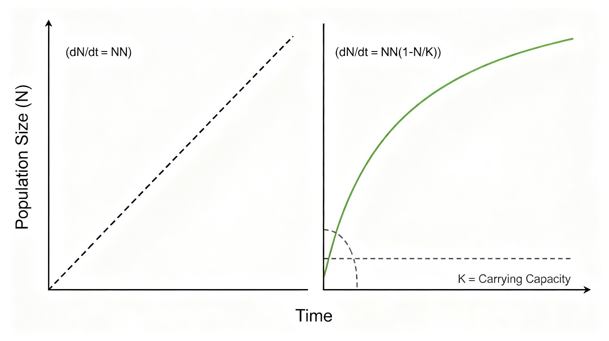

二、种群生态学
种群——同种个体的有机统一体
种群(population)是在一定时空格局中,同种个体通过种内关系组成的一个有机统一体。
种群的核心特征:
- 具有群体的信息传递、行为适应与数量反馈控制的功能
- 是一个能维持自身稳定性的自我调节系统
- 是自然界物种生存、进化、种间互作的基本单位
- 是生物群落、生态系统的基本组成成分
- 是生物资源保护利用和有害生物综合管理的具体对象
种群 vs 群落:种群是同种个体的集合;群落是不同种种群的集合。
1.1 种群密度的调查方法
多度(abundance)= 一定范围内的个体数 = 种群密度;丰富度(richness)= 物种数多寡。
种群密度估计分 2 大类:
- 绝对密度(absolute density):单位面积或空间上的个体数量
- 相对密度(relative density):个体数量多少的相对指标(如尿迹、粪堆、鸣声频次)
3 种主要调查方法:
- 样方法(quadrat method):用样方覆盖部分群落,统计其中的物种数和个体数,推算整体
- 适用:植物、活动范围小的动物(如蚯蚓、土壤小动物)
- 样方设计原则:典型性(代表性) + 自然性(人为干扰少) + 安全性(易调查取样)
- 样方面积:乔木 400 m² / 灌木 16-1 m² / 草本(或蕨类) 4-0.25 m² / 湿地固定样地 ≥10 hm² / 监测位点 ≥1 hm²
- 最小样方面积(s)确定:
- 种-面积曲线法(species-area curve):以"种的数目与样方面积增加的折点"作为 s
- 前人在当地的样方面积为参照
- 有些学者将 s 定义为包含 95% 物种总数的地区
- 用优势种的"重要值-面积曲线"确定
- 调查季节选择:生物量最高和/或开花结实期(一年生) / 多年生选开花结实期 / 多年多次选代表性时期
- 标志重捕法(mark-recapture, Lincoln 指数法):先捕一部分个体标记再放回,经一定时间后重捕,根据重捕中标记个体的比例估计种群数量
- Lincoln 公式:N = (M × n) / m,其中 N=种群总数,M=标记数,n=重捕数,m=重捕中标记数
- 使用假设:① 种群在调查区域内是均匀分布的(放松)② 调查期无新的出生、迁入和死亡、迁出(可计数)③ 标记方法不能影响动物的被捕机会④ 标记需要维持足够时间,重捕期间不能脱落
- 去除取样法(removal method):连续多次捕捉,根据累计捕获数与捕获率的关系推算 N
📌 奥赛易错:"样方"不应用于活动能力强的动物——"活动能力强的土壤动物"用"采集罐"或"诱捕法",不是"样方法"。
1.2 种群的空间分布类型(3 种)
种群的 3 种空间分布:
- 均匀分布(uniform / regular distribution):个体之间距离大致相等——资源均一时或种内竞争激烈时(如荒漠灌木)
- 随机分布(random distribution):个体在空间中完全随机——资源均一并缺少种内种间竞争时(如某些植物种子)
- 聚集分布(aggregated / clumped distribution):个体在空间呈斑块状聚集——资源不均、社会性群居、生殖策略(家庭)等
David-Moore 聚集指数(D)判断:
D = S² / x̄
其中 S² = ∑(xᵢ - x̄)² / (n-1) 是方差,x̄ 是平均数。
- D < 1:均匀分布
- D = 1:随机分布
- D > 1:聚集分布
📌 奥赛易错:
- 若 D=1 不一定真的是随机分布,需查 F 分布表作显著性检验
- 家庭型群居的动物(如池鹭)倾向于聚集分布
1.3 年龄结构与年龄锥体
年龄锥体(age pyramid):种群各年龄组的个体数或百分比的分布呈金字塔形,横柱位置表示不同年龄组,横柱高度表示该年龄组个体所占百分比。
3 种基本类型:
- 增长型种群(increasing):幼年组个体多,老年组少,死亡率 < 出生率,种群迅速增长——金字塔基部宽阔、顶部窄
- 稳定型种群(stable):各年龄组个体数较均匀,出生率 ≈ 死亡率,种群数量稳定——金字塔上下宽度大体一致(钟形)
- 下降型种群(declining):幼年组少,老年组多,死亡率 > 出生率,种群趋向减少——金字塔基部窄、顶部宽(倒置)
📌 奥赛判断:稳定型"钟形"(上下宽度一致),不是"金字塔形";增长型才是"金字塔形"(基部宽顶部窄)。
1.4 存活曲线(3 种类型)
存活曲线(survivorship curve)用对数坐标展示 Nx(=x 年龄开始时的存活数)与年龄 x 的关系。3 种类型:
- Ⅰ型(凸型):幼体和中年个体存活率相对高,老年个体死亡率高——大型哺乳动物(牛、马、人、羊、象、鲸)
- Ⅱ型(对角线型 / 直线型):各年龄段死亡率恒定,曲线呈对角线——某些鸟类、啮齿类
- Ⅲ型(凹型):极高幼体死亡率时期后,存活率相对高——海洋无脊椎动物(牡蛎、藤壶、海洋鱼类)、寄生虫(血吸虫、蛔虫)、昆虫、乌贼
📌 奥赛典型:
- Ⅰ型:牛、马、菜粉蝶(?)、人、大象(人属 Ⅰ 型偏多)
- Ⅲ型:牡蛎、海洋鱼类、血吸虫、藤壶、蛔虫、乌贼
1.5 生命表与种群统计参数
生命表(life table):统计种群各年龄段的存活率、死亡率、出生率、期望寿命等参数。
关键参数:
- lx(survivorship at age x):存活到 x 年龄的概率
- dx(mortality at age x):x 年龄的死亡数
- qx(age-specific mortality):x 年龄的死亡率 = dx/lx
- mx(age-specific fecundity):x 年龄的出生率
- R₀(net reproductive rate):净增殖率 = ∑lx·mx
- λ(finite rate of increase):周限增长率 = Nₜ₊₁/Nₜ
- r(intrinsic rate of increase):内禀增长率,瞬时增长率
- ex(life expectancy):x 年龄的生命期望
种群加倍时间 t = ln(2) / r ≈ 0.693 / r。
§1 种群特征小结
- 种群 = 同种个体的有机统一体,基本单位是群落/生态系统的组成成分
- 3 大调查方法:样方法(植物+活动范围小的动物)/ 标志重捕法(Lincoln 指数)/ 去除取样法
- 样方面积:乔木 400 m² / 灌木 16-1 m² / 草本 4-0.25 m²;湿地固定样地 ≥10 hm²
- 3 大空间分布:均匀 / 随机 / 聚集;David-Moore 指数 D = S²/x̄,>1 聚集,<1 均匀,=1 随机
- 年龄锥体 3 型:增长型(基宽顶窄)/ 稳定型(钟形)/ 下降型(基窄顶宽)
- 存活曲线 3 型:Ⅰ型(凸,大型哺乳)/ Ⅱ型(对角线)/ Ⅲ型(凹,海洋无脊椎+寄生虫+昆虫)
- 生命表关键参数:lx、dx、qx、mx、R₀、λ、r、ex;种群加倍时间 t=ln2/r
种群增长——J 型、Logistic S 型与捕获模型
2.1 指数增长(J 型)——Malthus 模型
指数增长模型(exponential growth, J 型):
假设:无资源限制、无天敌、无种内竞争,种群在无限环境中按恒定增长率 r 增长。
数学表达式:
- 微分形式:dN/dt = rN
- 积分形式:Nₜ = N₀ · eʳᵗ (e 指数)
- 离散形式(周限增长):Nₜ = N₀ · λᵗ (λ = eʳ)
其中 Nₜ = t 时刻种群数量,N₀ = 初始数量,r = 内禀增长率(瞬时增长率),λ = 周限增长率(每代倍增数)。
种群持续递减的条件(λ 范围判断):
- λ = 0:种群灭绝
- 0 < λ < 1:种群逐代持续递减(下代 < 上代)
- λ = 1:种群数量稳定(出生 = 死亡)
- λ > 1:种群逐代增长
📌 奥赛易错:Malthus 模型是非密度制约增长——"无限制环境"下 J 型增长是种群增长的上限,实际自然种群很少长期保持 J 型。
2.2 逻辑斯谛增长(S 型)——Logistic 模型
逻辑斯谛增长模型(logistic growth, S 型)是自然种群的典型增长模式——随着资源消耗,种群增长率变慢并趋于停止,呈 S 型曲线。
模型前提:
- 有限环境——有一个环境条件所允许的最大种群值,即环境容纳量(environmental carrying capacity, K)
- 种群增长率随种群密度增加而线性下降
微分方程:dN/dt = rN(1 - N/K) = rN(K-N)/K
积分形式:
Nₜ = K / (1 + eᵃ⁻ʳᵗ)
其中 a = ln((K-N₀)/N₀) 是积分常数。
关键拐点(inflection point):在 N = K/2 处,dN/dt 达到最大值(种群增长最快)。
- 拐点前(N < K/2):dN/dt 随 N 增加而上升
- 拐点后(N > K/2):dN/dt 随 N 增加而下降
- N = K 时:dN/dt = 0,种群停止增长(达到环境容纳量)
2.3 逻辑斯谛增长的 5 个时期
S 型曲线可分 5 个时期:
- A 开始期(lag phase):种群增长慢,适应环境
- B 加速期(exponential phase):N 较小,接近指数增长
- C 转折期(inflection):N = K/2,增长速率最大
- D 减速期(deceleration phase):增长速率下降
- E 饱和期(asymptotic phase):N 接近 K,增长近零

2.4 收获与捕获模型
📌 奥赛核心:持续最大捕获量
在 Logistic 模型中,捕获后种群增长率为 dN/dt = rN(1 - N/K) - H,其中 H 为捕获率。
持续获得最大收益的捕获量 = 种群在 N = K/2 时的最大持续产量 = rK/4
即"捕获后剩余种群在 K/2 时,增长速率最大,捕获量也最大"。
例:环境容纳量 15000 吨,瞬时增长率为 0.04 吨/年,持续获得最大收益的年捕获量 = 0.04 × 15000 / 4 = 150 吨。
2.5 增长模型对比与选择
| 模型 | 方程 | 曲线 | 适用 | 限制 |
|---|---|---|---|---|
| J 型(指数,Malthus) | dN/dt = rN | J 型 | 无限制环境的"理想"种群(如细菌初期、引进物种初期) | 无 K 限制,长期看不可持续 |
| S 型(逻辑斯谛,Logistic) | dN/dt = rN(1-N/K) | S 型 | 自然种群有限环境,密度制约增长 | 假设 r、K 不变,与现实有偏差 |
| Allen 模型 | —— | —— | (注:此为医学神经科学中的"大鼠脊髓损伤评分模型",非生态学增长模型) | 奥赛易混点 |
| Levins 模型 | —— | —— | 2 物种相互作用集合种群模型(异质种群) | 奥赛易混点 |
§2 种群增长小结
- J 型(Malthus):dN/dt = rN,Nₜ = N₀λᵗ 或 N₀eʳᵗ;非密度制约,λ 范围 0~1 递减,=1 稳定,>1 增长
- S 型(Logistic):dN/dt = rN(1-N/K),Nₜ = K/(1+eᵃ⁻ʳᵗ);拐点 N = K/2,此处 dN/dt 最大
- S 型 5 期:开始期 A / 加速期 B / 转折期 C(K/2)/ 减速期 D / 饱和期 E(≈K)
- 持续最大捕获量 = rK/4(捕获后剩余 N=K/2 时获得);例:K=15000,r=0.04,最大捕获=150 吨/年
- 奥赛易混:Allen(医学)与 Levins(集合种群)非生态学增长模型,容易误选
6 大学派——气候、生物、自动、行为、内分泌、遗传
种群数量受 6 大学派调节:
- 气候学派:种群数量受天气的强烈影响——非密度制约
- 生物学派:捕食、寄生、竞争、食物等生物因素对种群起调节作用——密度制约
- 自动调节学说:种内成员的异质性
- 行为调节学说:社群的等级和领域性
- 内分泌调节学说:激素分泌的反馈调节机制
- 遗传调节学说:遗传多态性
📌 奥赛判断:
- 密度制约因子:种内竞争、种间竞争、捕食、寄生、食物——天敌数量、食物数量(种内不构成密度制约)
- 非密度制约因子:降雨量、年温差等气候因子
- 在环境极不稳定条件下,非密度制约因素起主要作用;反之亦然
§3 种群数量调节小结
- 6 大学派:气候(非密度制约)/ 生物(密度制约)/ 自动 / 行为 / 内分泌 / 遗传
- 密度制约:天敌数量、食物数量、种间竞争、种内竞争
- 非密度制约:降雨量、年温差、温度极端值
- 环境稳定→密度制约主导;环境不稳定→非密度制约主导
r-选择 vs K-选择——从杂草到大型动物
4.1 r-选择 vs K-选择对比
| 特征 | r-选择(r-strategist) | K-选择(K-strategist) |
|---|---|---|
| 环境 | 条件严酷、不可预测 | 条件优越、可预测 |
| 死亡率 | 高,与密度无关 | 低,与密度相关(竞争激烈) |
| 能量分配 | 多用于生殖,少用于生长 | 多用于生殖外的活动(生长、护幼) |
| 寿命 | 短命 | 长命 |
| 成熟 | 早熟 | 晚熟 |
| 生殖率 | 高 | 低 |
| 体型 | 小 | 大 |
| 种群稳定性 | 不稳定,大起大落 | 稳定,接近 K |
| 竞争力 | 弱 | 强 |
| 亲代关怀 | 少 | 多 |
| 代表 | 杂草、昆虫、细菌、小型鱼类 | 大型哺乳动物(象、鲸)、大型乔木、人 |
4.2 r-K 连续体(Grime CSR 三角)
r-K 连续体(r-K continuum):从极端 r-选择到极端 K-选择之间有许多过渡类型。
Grime CSR 模型(三角模型):
- R(Ruderal 杂草对策):低严峻度 + 高干扰 + 高繁殖率
- C(Competitive 竞争对策):低严峻度 + 低干扰 + 成体间竞争度最大化
- S(Stress-tolerant 胁迫忍耐对策):高严峻度 + 低干扰度
§4 r-K 对策小结
- r-对策:严酷不可预测环境、短命早熟高繁殖率、体小、无亲代关怀(杂草、昆虫)
- K-对策:优越可预测环境、长命晚熟低繁殖率、体大、亲代关怀多(大型动物、乔木)
- 奥赛判断:r-对策"种群密度经常激烈变动"是缺点;K-对策"发育速度通常较慢"是特点
- Grime CSR:R(低严酷+高干扰) / C(低严酷+低干扰+高竞争) / S(高严酷+低干扰)
种间关系全谱——从竞争到共生 8 大类型
种间关系 8 大类型(从负作用到正作用):
- 竞争(competition):-/- 双方有害——争夺资源(食物、空间、光、水)
- 捕食(predation):-/- 一方捕食另一方
- 寄生(parasitism):-/- 寄主受损、寄生物受益
- 偏害共生(amensalism):0/- 一方受抑制,另一方无影响(化感作用)
- 偏利共生(commensalism):+/0 一方受益,另一方无影响(藤壶附螺、鮣鱼附鲨鱼)
- 互利共生(mutualism):+/+ 双方互惠(豆科+根瘤菌、地衣、白蚁+鞭毛虫)
- 中性(neutralism):0/0 双方无影响(同域但无相互作用)
5.1 竞争(Lotka-Volterra 模型)
Lotka-Volterra 竞争方程(1925, 1926 独立提出):
物种甲: dN₁/dt = r₁N₁(K₁ - N₁ - αN₂)/K₁
物种乙: dN₂/dt = r₂N₂(K₂ - N₂ - βN₁)/K₂
其中 α = 物种乙对物种甲的竞争系数,β = 物种甲对物种乙的竞争系数。
4 种结局(按 K₁/K₂ 与 α/β 比较):
- 若 K₁ > K₂/β 且 K₂ < K₁/α:甲胜(乙绝)
- 若 K₁ < K₂/β 且 K₂ > K₁/α:乙胜(甲绝)
- 若 K₁ < K₂/β 且 K₂ < K₁/α:共存(稳定)
- 若 K₁ > K₂/β 且 K₂ > K₁/α:不稳定(谁先占优势谁赢)
📌 奥赛易错:在判断"种内 vs 种间竞争强度"时,需比较 K 与 N(实际密度),而非单纯看 K 数值。
5.2 捕食与植物的诱导防御
捕食者策略:
- 广食性(generalist):捕食多种猎物——瓢虫、草蛉
- 狭食性(specialist):捕食特定猎物——食蚁兽、专性捕食某种昆虫的拟寄生蜂
植物的诱导防御(induced defense)(被啃食后的响应):
- 形态防御:长出更尖更硬的荆棘(悬钩子)
- 化学防御:产生更多蛋白酶抑制物(颠茄)、丹宁、强心苷(马利筋)、生物碱
- 诱导抗性:产生隐蔽性拟态、刺激性物质以减少再被采食
斑蝶-马利筋-强心苷经典案例:
- 马利筋产生强心苷(对动物有毒)
- 斑蝶摄食马利筋后,能将强心苷储存体内,鸟兽不敢捕食
- 该现象属于协同进化(coevolution)——植物的防御机制被斑蝶利用
- 一些不吃马利筋的蝴蝶模仿斑蝶形态——贝茨拟态(Batesian mimicry)
📌 奥赛判断:
- 动物次生代谢产物(丹宁、强心苷、生物碱)主要作用对象是动物/病原体
- 化感物质(allelochemicals,酚类/萜类/生物碱)主要作用对象是植物/微生物
- 化感作用(allelopathy)主要用于抵御其他植物的竞争——不是"防御食草动物"(那是化学防御)
- 化感自毒:有的化感物质同样抑制植物自身——连作障碍的成因之一
5.3 寄生与宿主协同进化
寄生(parasitism)关键特征:
- 寄生物通常比宿主小,通常不立即杀死宿主
- 寄生物高度特化,常仅寄生于一种或少数宿主
- 共同进化:寄生毒力越来越强,宿主反杀力也越来越强(红皇后效应)
寄生类型:
- 体外寄生(ectoparasitism):虱、蚤、蜱、螨
- 体内寄生(endoparasitism):蠕虫、疟原虫、绦虫、血吸虫
- 拟寄生(parisitoid):寄生蜂、寄生蝇——最终杀死宿主(介于寄生和捕食之间)
- 社会性寄生:杜鹃巢寄生(把卵产在其他鸟巢中)
5.4 共生(mutualism)分类
互利共生(mutualism)的 7 大类型:
- 行为互利共生:鼓虾和丝鱼
- 种植和饲养:白蚁和真菌(白蚁培养真菌作为食物)
- 传粉共生:有花植物和传粉动物(蜜蜂)
- 消化道共生:反刍动物和胃纤毛虫(帮助分解纤维素)
- 菌根共生:高等植物与真菌(95% 陆生植物有菌根)
- 内共生:纤毛虫和藻类(地衣 = 真菌+藻类)
- 细胞内共生:线粒体起源于 α-变形菌(内共生学说);叶绿体起源于蓝藻
偏利共生(commensalism)的典型:
- 藤壶附着在螺壳上
- 鮣鱼(印鱼)附在鲨鱼腹部(借鲨鱼游动免费旅行,吃鲨鱼剩饵)
- 人类肠道中的大肠杆菌(对人无害、对菌有益)
5.5 化感作用(allelopathy)详解
化感作用(allelopathy):植物通过释放化学物质到环境中,对周围其他植物(或微生物)的生长产生抑制或促进的作用。
主要化感物质:
- 酚类(phenolics):没食子酸、单宁等
- 萜类(terpenes):桉树脑、薄荷脑
- 生物碱(alkaloids):咖啡因、奎宁
📌 奥赛易错:
- 化感作用主要用于抵御其他植物的竞争(不是动物采食,那是化学防御)
- 化感物质也具有双重性:低浓度促进、高浓度抑制
- 化感自毒(self-toxicity):有些化感物质同样抑制自身——连作障碍主因
§5 种间关系小结
- 8 大种间关系:竞争/捕食/寄生/偏害/偏利/互利/中性/合作
- Lotka-Volterra 竞争模型:dN/dt = rN(K-N-αN₂)/K,4 结局(甲胜/共存/不稳定/乙胜)
- 植物的诱导防御:形态(荆棘) + 化学(丹宁、强心苷、生物碱、化感物质) + 拟态
- 协同进化经典:马利筋(强心苷) → 斑蝶(储存) → 鸟兽不敢捕食 → 不吃的蝴蝶模仿(贝茨拟态)
- 化感作用 vs 植物次生代谢物质:前者作用对象是植物/微生物(竞争),后者作用对象是动物/病原体(防御)
- 化感自毒 = 连作障碍主因
- 互利共生 7 类型:行为/种植/传粉/消化道/菌根/内共生/细胞内共生
关键种、优势种、冗余种——维持群落稳定的"核心"
群落成员按功能分 4 类:
- 优势种(dominant species):对群落结构和环境形成起决定性作用,通常数量多、生物量大——云杉林中的云杉
- 关键种(keystone species):其消失将使整个群落发生根本性变化——不一定数量多,通常体积小(如海獭、海星)
- 稀有种(rare species):数量稀少,在群落中作用不显著
- 冗余种(redundant species):在群落中功能可被其他物种替代,作用不显著
📌 奥赛判断:"有些物种消失将使整个群落发生根本性变化"——这种物种称为关键种(keystone species)。优势种≠关键种:优势种通常数量多,但消失后可能由其他物种替代;关键种数量不一定多,但功能不可替代。
§6 关键种小结
- 4 类:优势种(数量多,决定结构)/ 关键种(数量不一定多,不可替代)/ 稀有种 / 冗余种
- 奥赛判断:"消失将使整个群落发生根本性变化"= 关键种